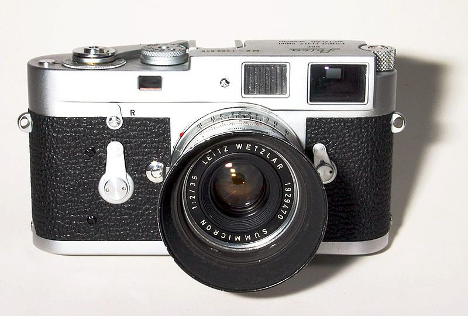
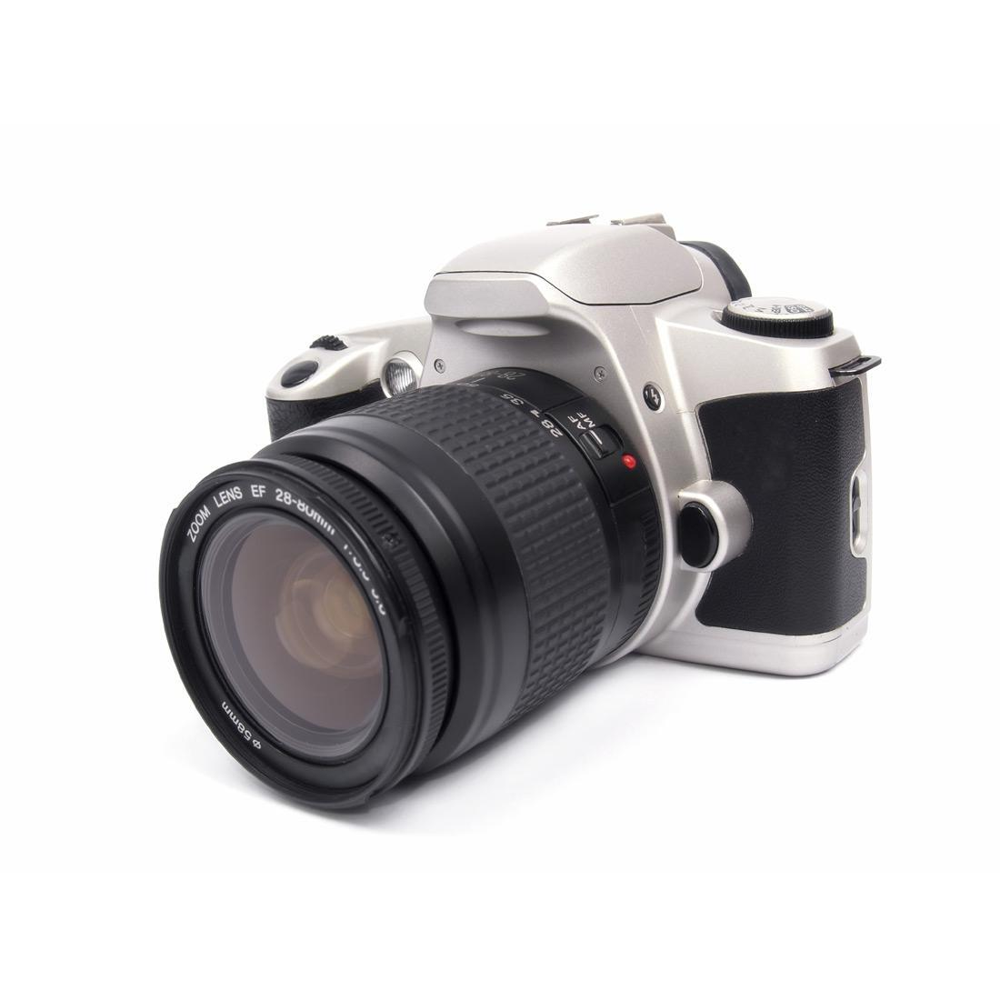
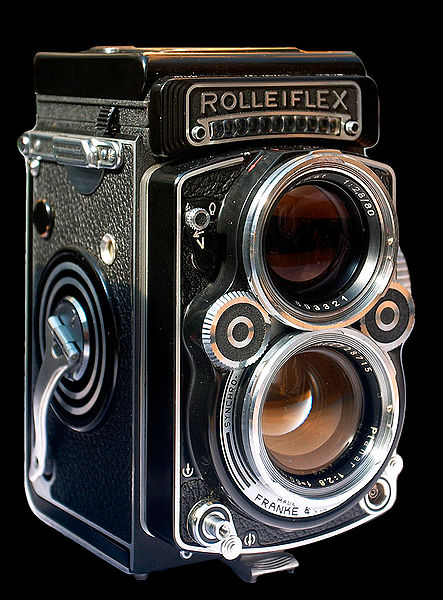
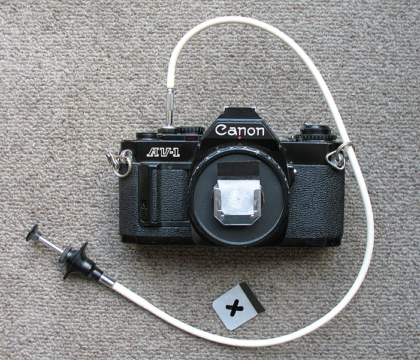

Verschillende soorten camera's
Er zijn verschillende soorten camera's die verschillende manieren gebruiken om een beeld op te nemen. Deze pagina bevat informatie over deze verschillende soorten.
Veel van deze camera's zullen waarschijnlijk nooit gebruikt worden door een amateur fotograaf. Om toch een beeld te geven welke technologie er allemaal gebruikt wordt in de toestellen worden ze hier beschreven.
Meetzoekercamera
Een meetzoekercamera is een fotocamera, voorzien van een optisch systeem voor het bepalen van de beeldinhoud of compositie (de zoeker) gecombineerd met een optisch-mechanisch systeem voor de scherpstelling van het beeld (afstandinstelling).
Het scherpstelsysteem maakt gebruik van de parallax tussen de zoeker en een kleine hulpzoeker, waarvan het beeld via een periscoopachtig spiegel- en/of prismasysteem gemengd wordt met het zoekerbeeld. Door aan de afstandinstelring van het objectief te draaien draait ook een spiegeltje in de "periscoop" en kan men het beeldje van een bepaald object in de zoeker in dekking brengen met het beeldje uit de hulpzoeker. Het mechaniek is zo afgesteld dat op dat moment de afstandinstelling correct is voor dat object. Sommige meetzoekercamera's hebben verwisselbare objectieven met verschillende brandpuntsafstanden; deze zijn voorzien van een koppeling naar het systeem in de camera.
De grote "tegenhanger" van de meetzoekercamera is de spiegelreflexcamera; deze heeft met zijn veelzijdigheid en dankzij betaalbare Japanse massaproductie allengs een aanzienlijk grotere populariteit verworven dan de meetzoekercamera.
De meetzoekercamera heeft door zijn compacte bouw en vrijwel geruisloze werking toch een behoorlijke schare aanhangers vastgehouden, met name in de reportage- en straatfotografie.
Eénogige spiegelreflexcamera
Dit type camera wordt ook wel aangeduid met de afkorting SLR wat staat voor Single Lens Reflex. Meestal betreft het middenformaatcamera's of kleinbeeld spiegelreflexcamera's. Bij sommige camera’s kan de fotograaf het beeld op het instelglas rechtstreeks van bovenaf bekijken. Meestal wordt het beeld echter bekeken via één of meer prisma’s (gewoonlijk via een pentaprisma, ook wel dakkantprisma genoemd) en/of spiegels (porro mirror system). In sommige camera’s kunnen verschillende typen instelglazen geplaatst worden en soms is ook de rest van het zoekersysteem verwisselbaar.
Op het moment van de opname klapt de spiegel weg uit de baan tussen lens en film (sensor) en sluit daarmee tegelijk het via de zoeker invallende licht buiten. Vervolgens opent zich dan de spleetsluiter die zich vlak voor de film (sensor) bevindt. Als de sluiter zich in het objectief bevindt (centraalsluiter) is de camera van klepjes of een hulpsluiter voorzien om te verhinderen dat er licht op de film valt zolang de sluiter openstaat voor het bekijken van het zoekerbeeld. Tijdens het opklappen van de spiegel sluit het diafragma (niet in het plaatje afgebeeld) in het objectief zich tot de waarde die door de gebruiker of door een automatisch systeem is ingesteld.
Een nadeel van de eenogige is de onvermijdelijke klap die men hoort bij het opklappen van de spiegel tijdens de opname. Daardoor is dit type reflexcamera minder geschikt voor situaties waarbij stilte gewenst is. Zoals gezegd maakt het reflexsysteem optimaal richten en instellen mogelijk. Het beeld op het matglas is namelijk gelijk aan het beeld dat op de film (sensor) gaat komen.
Eénogige spiegelreflexcamera
Voor dit type fototoestel wordt ook wel de afkorting TLR gebruikt wat Twin Lens Reflex betekent, meestal gaat het dan om middenformaatcamera's.
Een min of meer in onbruik geraakt type spiegelreflexcamera is de twee-ogige-reflexcamera. Hierbij is het zoekersysteem gescheiden van het opnamesysteem. Het zoekerbeeld wordt verkregen met een objectief dat (vrijwel) gelijk is aan het opnameobjectief en dat via een spiegel een beeld op een matglas werpt. De camera heeft dus twee objectieven, normaliter boven elkaar; deze zijn gekoppeld zodat de scherpstelling nauwkeurig op het matglas kan geschieden. Door de parallax zijn het zoekerbeeld en het filmbeeld echter niet 100% aan elkaar gelijk. In tegenstelling tot de eenogige reflexen wordt bij dit type de spiegel niet opgeklapt bij het maken van de opname, hetgeen resulteert in vrijwel geruisloze techniek.
Pinhole camera
Een pinhole camera is een camera zonder lens. In plaats van een lens wordt een klein gaatje (Engels: pinhole) gebruikt.
De scherpte hangt af van de grootte van het gaatje en van de afstand tussen het gaatje en de film (of beeldchip). Over het algemeen geldt dat hoe kleiner het gaatje is hoe scherper het beeld is, totdat diffractie een rol gaat spelen en weer meer onscherpte veroorzaakt.
Het beeld is wel overal even (on)scherp, zodat de scherptediepte oneindig is en er niet scherpgesteld hoeft te worden. Verder treedt er aan de randen van de foto geen vertekening op wat bij foto's genomen met een lens wel het geval is. Hierdoor kunnen er met pinhole camera's ultra groothoek foto's gemaakt worden.
Een nadeel van een pinhole camera is dat er door het kleine gaatje maar weinig licht komt en dat er dus een lange belichtingstijd nodig is. De pinhole-camera lijkt daarmee erg op de camera obscura.